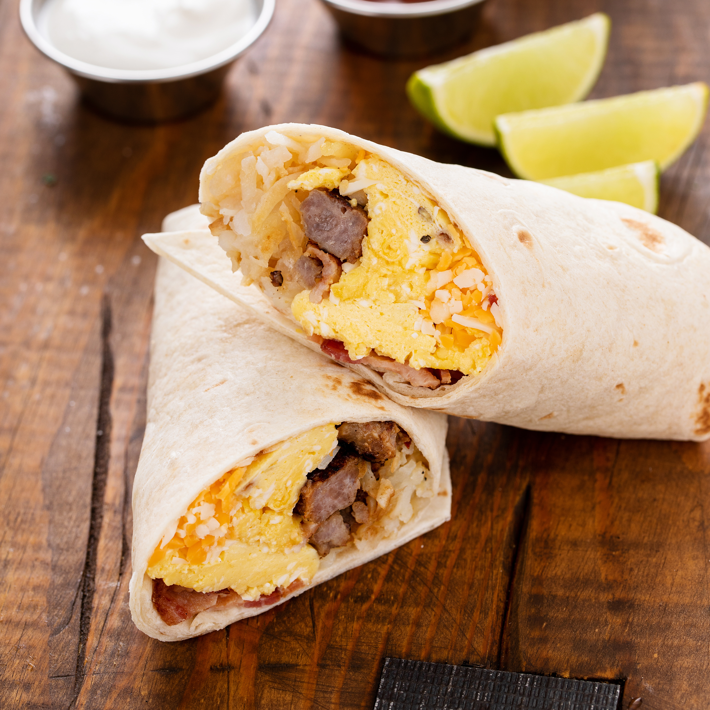
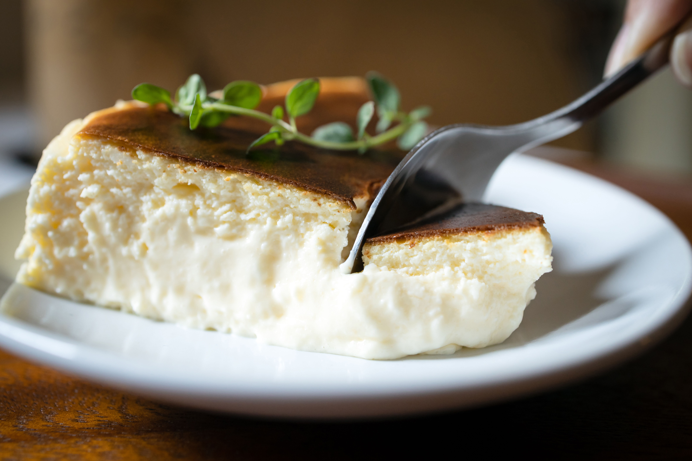

About This Site
An Online Record As I Look To Improve My Cooking Skills
I've been learning to cook for years, mostly by following recipes, but that hasn't given me the instinct to put a dish together from scratch. I've decided to experiment with a different approach.I'll study cooking techniques, the science behind recipes, cooking tools, then publish what I learn alongside a small selection of dishes I make. Each with a photo and a note on what I picked up along the way. Learning to cook is a tough skill to master, but I believe that practice and knowledge can get anyone there. Let the journey begin!

More To Check Out
Breakfast

Dinner

Dessert
